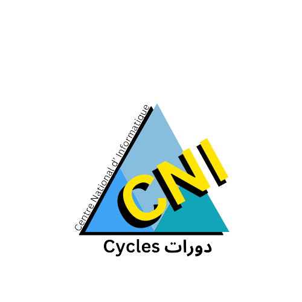

<mat-toolbar color="primary">
  <button mat-icon-button (click)="sidenav.toggle()" class="menu-button" *ngIf="show">
    <mat-icon>menu</mat-icon>
  </button>
  
  <span routerLink="/cycle_list" style="cursor: pointer;">
    المركز الوطني للإعلامية‎‎
  </span>
  <span class="example-spacer"></span>
  <button mat-icon-button routerLink="/cycle_list">
    <mat-icon>home</mat-icon>
  </button>
</mat-toolbar>

<mat-sidenav-container>
  <mat-sidenav #sidenav mode="side">
    <mat-nav-list>
      <a mat-list-item routerLink="/part_list">
        <p class="custom-list-item">
          <mat-icon>person</mat-icon>
          Participants management
        </p>
      </a>
      <mat-divider></mat-divider>
      <a mat-list-item routerLink="/former_list">
        <p class="custom-list-item">
          <mat-icon>person</mat-icon>
          Formers management
        </p>
      </a>
      <mat-divider></mat-divider>
      <a mat-list-item routerLink="/cycle_list">
        <p class="custom-list-item">
          <mat-icon>book</mat-icon>
          Cycles list
        </p>
      </a>
      <mat-divider></mat-divider>
      <a mat-list-item routerLink="/add_cycle">
        <p class="custom-list-item">
          <mat-icon>book</mat-icon>
          Add Cycle
        </p>
      </a>
      <mat-divider></mat-divider>
      <a mat-list-item style="text-align: center;">
        <button mat-raised-button (click)="logout()">Logout</button>
      </a>
      <mat-divider></mat-divider>
    </mat-nav-list>
  </mat-sidenav>

  <mat-sidenav-content style="height: 100vh;background-color:rgb(224, 223, 240);">
    <router-outlet></router-outlet>
  </mat-sidenav-content>
</mat-sidenav-container>
